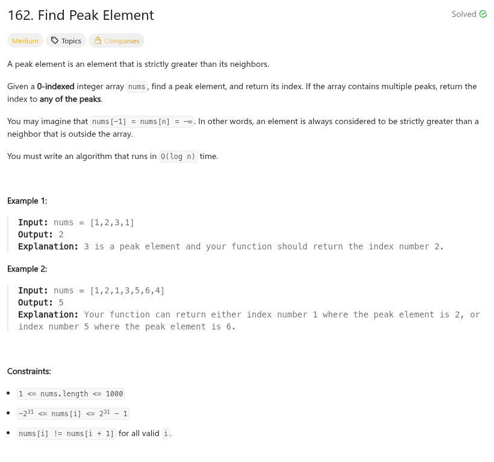

參考資訊：
https://www.cnblogs.com/grandyang/p/4217175.html
題目：

int findPeakElement(int *nums, int numsSize)
{
int cc = 0;
int *q = malloc(sizeof(int) * (numsSize + 2));
if (numsSize == 1) {
return 0;
}
q[0] = INT_MIN;
for (cc = 0; cc < numsSize; cc++) {
q[cc + 1] = nums[cc];
}
q[cc + 1] = INT_MIN;
for (cc = 1; cc < (numsSize + 1); cc++) {
if ((q[cc] > q[cc - 1]) && (q[cc] > q[cc + 1])) {
return cc - 1;
}
}
return 0;
}